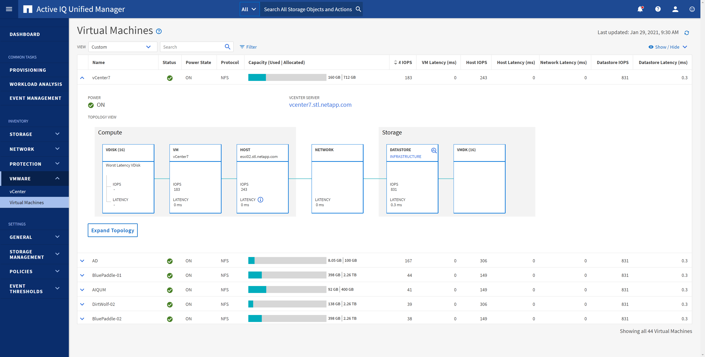

Microsoft SQL Server
Microsoft SQL Server
Qualità del servizio (QoS)
 Suggerisci modifiche
Suggerisci modifiche
I sistemi che eseguono il software ONTAP possono utilizzare la funzione QoS dello storage ONTAP per limitare il throughput in Mbps e/o i/o al secondo (IOPS) per diversi oggetti di storage come file, LUN, volumi o intere SVM.
I limiti di throughput sono utili per controllare i carichi di lavoro sconosciuti o di test prima della distribuzione per assicurarsi che non influiscano su altri carichi di lavoro. Possono anche essere utilizzati per limitare un carico di lavoro ingombrante dopo l'identificazione. Sono supportati anche i livelli minimi di servizio basati sugli IOPS per fornire performance costanti per gli oggetti SAN in ONTAP 9.2 e per gli oggetti NAS in ONTAP 9.3.
Con un datastore NFS, è possibile applicare una policy di QoS all'intero volume FlexVol o ai singoli file VMDK al suo interno. Con gli archivi di dati VMFS che utilizzano LUN ONTAP, è possibile applicare i criteri di qualità del servizio al volume FlexVol che contiene LUN o LUN singoli, ma non singoli file VMDK, poiché ONTAP non è consapevole del file system VMFS. Quando si utilizza vVol, è possibile impostare la QoS minima e/o massima su singole macchine virtuali utilizzando il profilo di capacità dello storage e la policy di storage delle macchine virtuali.
Il limite massimo di throughput QoS su un oggetto può essere impostato in Mbps e/o IOPS. Se vengono utilizzati entrambi, il primo limite raggiunto viene applicato da ONTAP. Un carico di lavoro può contenere più oggetti e una policy QoS può essere applicata a uno o più carichi di lavoro. Quando una policy viene applicata a più carichi di lavoro, i carichi di lavoro condividono il limite totale della policy. Gli oggetti nidificati non sono supportati (ad esempio, i file all'interno di un volume non possono avere una propria policy). I valori minimi di QoS possono essere impostati solo in IOPS.
I seguenti strumenti sono attualmente disponibili per la gestione delle policy di qualità del servizio ONTAP e per applicarle agli oggetti:
-
CLI ONTAP
-
Gestore di sistema di ONTAP
-
OnCommand Workflow Automation
-
Active IQ Unified Manager
-
Kit di strumenti NetApp PowerShell per ONTAP
-
Strumenti ONTAP per il provider VMware vSphere VASA
Per assegnare un criterio QoS a un VMDK su NFS, attenersi alle seguenti linee guida:
-
La policy deve essere applicata a
vmname- flat.vmdkche contiene l'immagine effettiva del disco virtuale, non ilvmname.vmdk(file di descrizione del disco virtuale) o.vmname.vmx(File descrittore VM). -
Non applicare policy ad altri file di macchine virtuali, ad esempio file di swap virtuali (
vmname.vswp). -
Quando si utilizza il client Web vSphere per trovare i percorsi di file (datastore > file), tenere presente che combina le informazioni di
- flat.vmdke.. vmdke mostra semplicemente un file con il nome di. vmdkma le dimensioni di- flat.vmdk. Aggiungi-flatnel nome del file per ottenere il percorso corretto.
Per assegnare una policy di QoS a un LUN, inclusi VMFS e RDM, è possibile ottenere la SVM di ONTAP (visualizzata come Vserver), il percorso del LUN e il numero di serie dal menu dei sistemi storage nella home page degli strumenti ONTAP per VMware vSphere. Seleziona il sistema storage (SVM), quindi gli oggetti correlati > SAN. Utilizzare questo approccio quando si specifica la qualità del servizio utilizzando uno degli strumenti ONTAP.
La QoS massima e minima può essere facilmente assegnata a una macchina virtuale basata su vVol con gli strumenti ONTAP per VMware vSphere o la console di storage virtuale 7.1 e versioni successive. Durante la creazione di un profilo di capacità storage per il container vVol, specifica un valore IOPS max e/o min in termini di performance, quindi fai riferimento a questo SCP con la policy storage delle macchine virtuali. Utilizzare questo criterio quando si crea la macchina virtuale o si applica il criterio a una macchina virtuale esistente.
Gli archivi dati FlexGroup offrono funzionalità QoS avanzate quando si utilizzano gli strumenti ONTAP per VMware vSphere 9.8 e versioni successive. È possibile impostare facilmente la QoS su tutte le macchine virtuali di un datastore o su macchine virtuali specifiche. Per ulteriori informazioni, consultare la sezione FlexGroup di questo report.
QoS ONTAP e SIOC VMware
Il QoS di ONTAP e il controllo i/o dello storage VMware vSphere sono tecnologie complementari che vSphere e gli amministratori dello storage possono utilizzare insieme per gestire le performance delle macchine virtuali vSphere ospitate su sistemi che eseguono il software ONTAP. Ogni strumento ha i propri punti di forza, come mostrato nella tabella seguente. A causa dei diversi ambiti di VMware vCenter e ONTAP, alcuni oggetti possono essere visti e gestiti da un sistema e non dall'altro.
| Proprietà | QoS ONTAP | VMware SIOC |
|---|---|---|
Se attivo |
La policy è sempre attiva |
Attivo quando esiste un conflitto (latenza dell'archivio dati oltre la soglia) |
Tipo di unità |
IOPS, Mbps |
IOPS, condivisioni |
VCenter o ambito applicativo |
Più ambienti vCenter, altri hypervisor e applicazioni |
Singolo server vCenter |
Impostare QoS su VM? |
VMDK solo su NFS |
VMDK su NFS o VMFS |
Impostare QoS su LUN (RDM)? |
Sì |
No |
Impostare la qualità del servizio su LUN (VMFS)? |
Sì |
No |
Impostare QoS sul volume (datastore NFS)? |
Sì |
No |
Impostare QoS su SVM (tenant)? |
Sì |
No |
Approccio basato su policy? |
Sì; può essere condiviso da tutti i carichi di lavoro della policy o applicato in toto a ciascun carico di lavoro della policy. |
Sì, con vSphere 6.5 e versioni successive. |
Licenza richiesta |
Incluso con ONTAP |
Enterprise Plus |
VMware Storage Distributed Resource Scheduler
VMware Storage Distributed Resource Scheduler (SDR) è una funzionalità vSphere che consente di posizionare le macchine virtuali sullo storage in base alla latenza i/o corrente e all'utilizzo dello spazio. Quindi, sposta le VM o i VMDK senza interruzioni tra gli archivi dati in un cluster di datastore (noto anche come pod), selezionando il migliore datastore in cui posizionare le VM o i VMDK nel cluster di datastore. Un cluster di datastore è un insieme di datastore simili che vengono aggregati in una singola unità di consumo dal punto di vista dell'amministratore di vSphere.
Quando si utilizzano GLI SDR con i tool NetApp ONTAP per VMware vSphere, è necessario prima creare un datastore con il plug-in, utilizzare vCenter per creare il cluster del datastore e quindi aggiungervi il datastore. Una volta creato il cluster di datastore, è possibile aggiungere ulteriori datastore al cluster di datastore direttamente dalla procedura guidata di provisioning nella pagina Dettagli.
Altre Best practice ONTAP per I DSP includono:
-
Tutti gli archivi dati del cluster devono utilizzare lo stesso tipo di storage (ad esempio SAS, SATA o SSD), tutti gli archivi dati VMFS o NFS e avere le stesse impostazioni di replica e protezione.
-
Considerare l'utilizzo DEGLI SDR in modalità predefinita (manuale). Questo approccio consente di rivedere i suggerimenti e decidere se applicarli o meno. Tenere presente i seguenti effetti delle migrazioni VMDK:
-
Quando GLI SDR spostano i VMDK tra datastore, qualsiasi risparmio di spazio derivante dalla clonazione o deduplica ONTAP viene perso. È possibile rieseguire la deduplica per recuperare questi risparmi.
-
Dopo che LE SDR spostano i VMDK, NetApp consiglia di ricreare gli snapshot nel datastore di origine, poiché lo spazio è altrimenti bloccato dalla VM che è stata spostata.
-
Lo spostamento di VMDK tra datastore sullo stesso aggregato ha pochi benefici e GLI SDR non hanno visibilità su altri carichi di lavoro che potrebbero condividere l'aggregato.
-
Gestione basata su criteri di archiviazione e vVol
Le API VMware vSphere per Storage Awareness (VASA) semplificano la configurazione dei datastore da parte di un amministratore dello storage con funzionalità ben definite e consentono all'amministratore delle macchine virtuali di utilizzarle quando necessario per eseguire il provisioning delle macchine virtuali senza dover interagire tra loro. Vale la pena di dare un'occhiata a questo approccio per scoprire in che modo può semplificare le operazioni di virtualizzazione dello storage ed evitare un lavoro molto banale.
Prima di VASA, gli amministratori delle macchine virtuali potevano definire le policy di storage delle macchine virtuali, ma dovevano collaborare con l'amministratore dello storage per identificare gli archivi dati appropriati, spesso utilizzando la documentazione o le convenzioni di denominazione. Con VASA, l'amministratore dello storage può definire una serie di funzionalità di storage, tra cui performance, tiering, crittografia e replica. Un insieme di funzionalità per un volume o un set di volumi viene definito SCP (Storage Capability Profile).
SCP supporta la qualità del servizio minima e/o massima per i vVol di dati di una VM. La QoS minima è supportata solo sui sistemi AFF. Gli strumenti ONTAP per VMware vSphere includono una dashboard che visualizza le performance granulari delle macchine virtuali e la capacità logica per i vVol sui sistemi ONTAP.
La figura seguente mostra i tool ONTAP per il dashboard di VMware vSphere 9.8 vVol.

Una volta definito il profilo di capacità dello storage, è possibile utilizzarlo per eseguire il provisioning delle macchine virtuali utilizzando la policy di storage che ne identifica i requisiti. La mappatura tra il criterio di storage delle macchine virtuali e il profilo di capacità dello storage del datastore consente a vCenter di visualizzare un elenco di datastore compatibili per la selezione. Questo approccio è noto come gestione basata su criteri di storage.
VASA offre la tecnologia per eseguire query sullo storage e restituire un set di funzionalità di storage a vCenter. I vendor provider VASA forniscono la traduzione tra le API e i costrutti del sistema storage e le API VMware comprese da vCenter. Il provider VASA di NetApp per ONTAP viene offerto come parte dei tool ONTAP per macchina virtuale dell'appliance VMware vSphere, mentre il plug-in vCenter fornisce l'interfaccia per il provisioning e la gestione dei datastore vVol, nonché la capacità di definire profili di funzionalità dello storage (SCP).
ONTAP supporta gli archivi dati VMFS e NFS vVol. L'utilizzo di vVol con datastore SAN offre alcuni dei vantaggi di NFS, come la granularità a livello di macchine virtuali. Di seguito sono riportate alcune Best practice da prendere in considerazione e ulteriori informazioni sono disponibili in "TR-4400":
-
Un datastore vVol può essere costituito da più volumi FlexVol su più nodi del cluster. L'approccio più semplice è un singolo datastore, anche quando i volumi hanno funzionalità diverse. SPBM garantisce l'utilizzo di un volume compatibile per la macchina virtuale. Tuttavia, tutti i volumi devono far parte di una singola SVM ONTAP e devono essere accessibili utilizzando un singolo protocollo. È sufficiente una LIF per nodo per ogni protocollo. Evitare di utilizzare più release di ONTAP all'interno di un singolo datastore vVol, poiché le funzionalità dello storage potrebbero variare tra le varie release.
-
Utilizza i tool ONTAP per il plug-in VMware vSphere per creare e gestire datastore vVol. Oltre a gestire il datastore e il relativo profilo, crea automaticamente un endpoint del protocollo per accedere ai vVol, se necessario. Se si utilizzano LUN, tenere presente che i LUN PES vengono mappati utilizzando LUN ID 300 e superiori. Verificare che l'impostazione di sistema avanzata dell'host ESXi sia corretta
Disk.MaxLUNConsente un numero di ID LUN superiore a 300 (il valore predefinito è 1,024). Eseguire questa operazione selezionando l'host ESXi in vCenter, quindi la scheda Configura e trovaDisk.MaxLUNNell'elenco delle Advanced System Settings (Impostazioni di sistema avanzate). -
Non installare o migrare il provider VASA, il server vCenter (basato su appliance o Windows) o i tool ONTAP per VMware vSphere in sé su un datastore vVols, perché in tal caso sono dipendenti reciprocamente, limitando la possibilità di gestirli in caso di interruzione dell'alimentazione o di altre interruzioni del data center.
-
Eseguire regolarmente il backup della VM del provider VASA. Crea almeno snapshot orarie del datastore tradizionale che contiene il provider VASA. Per ulteriori informazioni sulla protezione e il ripristino del provider VASA, consulta questa sezione "Articolo della Knowledge base".
La figura seguente mostra i componenti di vVol.

Migrazione e backup del cloud
Un altro punto di forza di ONTAP è l'ampio supporto per il cloud ibrido, che unisce i sistemi nel tuo cloud privato on-premise con funzionalità di cloud pubblico. Ecco alcune soluzioni cloud NetApp che possono essere utilizzate insieme a vSphere:
-
Cloud Volumes NetApp Cloud Volumes Service per Amazon Web Services o Google Cloud Platform e Azure NetApp Files per ANF offrono servizi di storage gestiti multiprotocollo dalle performance elevate negli ambienti di cloud pubblico leader. Possono essere utilizzati direttamente dai guest delle macchine virtuali VMware Cloud.
-
Cloud Volumes ONTAP. il software per la gestione dei dati NetApp Cloud Volumes ONTAP offre controllo, protezione, flessibilità ed efficienza ai tuoi dati sul cloud di tua scelta. Cloud Volumes ONTAP è un software per la gestione dei dati nativo del cloud basato sul software di storage NetApp ONTAP. Utilizzare insieme a Cloud Manager per implementare e gestire le istanze di Cloud Volumes ONTAP insieme ai sistemi ONTAP on-premise. Sfrutta le funzionalità NAS e SAN iSCSI avanzate insieme a una gestione dei dati unificata, incluse le snapshot e la replica SnapMirror.
-
Servizi cloud. Usa Cloud Backup Service o SnapMirror Cloud per proteggere i dati dai sistemi on-premise utilizzando lo storage di cloud pubblico. Cloud Sync consente di migrare e mantenere sincronizzati i dati tra NAS, archivi di oggetti e storage Cloud Volumes Service.
-
FabricPool. FabricPool offre tiering rapido e semplice per i dati ONTAP. È possibile migrare i blocchi cold in un archivio di oggetti nei cloud pubblici o in un archivio di oggetti StorageGRID privato e vengono richiamati automaticamente quando si accede nuovamente ai dati ONTAP. Oppure utilizzare il Tier di oggetti come terzo livello di protezione per i dati già gestiti da SnapVault. Questo approccio può consentirti di farlo "Memorizzazione di più snapshot delle macchine virtuali" Sui sistemi storage ONTAP primari e/o secondari.
-
ONTAP Select. utilizza lo storage software-defined di NetApp per estendere il tuo cloud privato attraverso Internet a sedi e uffici remoti, dove puoi utilizzare ONTAP Select per supportare i servizi di file e blocchi e le stesse funzionalità di gestione dei dati vSphere presenti nel tuo data center aziendale.
Quando si progettano le applicazioni basate su macchine virtuali, considerare la futura mobilità del cloud. Ad esempio, invece di mettere insieme file di applicazioni e dati, utilizza un'esportazione LUN o NFS separata per i dati. Ciò consente di migrare la macchina virtuale e i dati separatamente ai servizi cloud.
Crittografia per i dati vSphere
Oggi, la necessità di proteggere i dati inattivi è in aumento grazie alla crittografia. Sebbene l'attenzione iniziale fosse concentrata sulle informazioni finanziarie e sanitarie, c'è sempre più interesse a proteggere tutte le informazioni, che siano archiviate in file, database o altri tipi di dati.
I sistemi che eseguono il software ONTAP semplificano la protezione dei dati con la crittografia a riposo. NetApp Storage Encryption (NSE) utilizza dischi con crittografia automatica e ONTAP per proteggere i dati SAN e NAS. NetApp offre inoltre NetApp Volume Encryption e NetApp aggregate Encryption come approccio semplice e basato su software per crittografare i volumi su qualsiasi disco. Questa crittografia software non richiede unità disco speciali o gestori di chiavi esterne ed è disponibile per i clienti ONTAP senza costi aggiuntivi. È possibile eseguire l'upgrade e iniziare a utilizzarlo senza alcuna interruzione per i client o le applicazioni e sono validati in base allo standard FIPS 140-2 livello 1, incluso il gestore delle chiavi integrato.
Esistono diversi approcci per la protezione dei dati delle applicazioni virtualizzate in esecuzione su VMware vSphere. Un approccio consiste nel proteggere i dati con il software all'interno della macchina virtuale a livello di sistema operativo guest. Gli hypervisor più recenti, come vSphere 6.5, ora supportano la crittografia a livello di VM come alternativa. Tuttavia, la crittografia del software NetApp è semplice e offre i seguenti vantaggi:
-
Nessun effetto sulla CPU del server virtuale. alcuni ambienti di server virtuali richiedono ogni ciclo di CPU disponibile per le proprie applicazioni, tuttavia i test hanno dimostrato che sono necessarie fino a 5 risorse di CPU con crittografia a livello di hypervisor. Anche se il software di crittografia supporta il set di istruzioni AES-NI di Intel per l'offload del carico di lavoro di crittografia (come fa la crittografia del software NetApp), questo approccio potrebbe non essere fattibile a causa del requisito di nuove CPU che non sono compatibili con i server meno recenti.
-
Onboard Key Manager incluso. la crittografia software NetApp include un gestore delle chiavi integrato senza costi aggiuntivi, il che rende semplice iniziare senza server di gestione delle chiavi ad alta disponibilità complessi da acquistare e utilizzare.
-
Nessun effetto sull'efficienza dello storage. le tecniche di efficienza dello storage, come deduplica e compressione, sono ampiamente utilizzate oggi e sono fondamentali per utilizzare i supporti su disco flash in modo conveniente. Tuttavia, i dati crittografati non possono in genere essere deduplicati o compressi. La crittografia dello storage e dell'hardware NetApp opera a un livello inferiore e consente l'utilizzo completo delle funzionalità di efficienza dello storage NetApp leader del settore, a differenza di altri approcci.
-
Crittografia granulare semplice del datastore. con NetApp Volume Encryption, ogni volume ottiene la propria chiave AES a 256 bit. Se è necessario modificarlo, è possibile farlo con un singolo comando. Questo approccio è ideale se hai più tenant o hai bisogno di dimostrare una crittografia indipendente per diversi reparti o applicazioni. Questa crittografia viene gestita a livello di datastore, il che è molto più semplice della gestione di singole macchine virtuali.
Iniziare a utilizzare la crittografia del software è semplice. Una volta installata la licenza, è sufficiente configurare il gestore delle chiavi integrato specificando una passphrase e quindi creare un nuovo volume o spostare un volume lato storage per abilitare la crittografia. NetApp sta lavorando per aggiungere un supporto più integrato per le funzionalità di crittografia nelle versioni future dei suoi strumenti VMware.
Active IQ Unified Manager
Active IQ Unified Manager offre visibilità sulle macchine virtuali dell'infrastruttura virtuale e consente il monitoraggio e la risoluzione dei problemi relativi a storage e performance nell'ambiente virtuale.
Una tipica implementazione di un'infrastruttura virtuale su ONTAP include diversi componenti distribuiti tra livelli di calcolo, rete e storage. Eventuali ritardi nelle performance in un'applicazione VM potrebbero verificarsi a causa di una combinazione di latenze affrontate dai vari componenti nei rispettivi layer.
La seguente schermata mostra la vista macchine virtuali Active IQ Unified Manager.

Unified Manager presenta il sottosistema sottostante di un ambiente virtuale in una vista topologica per determinare se si è verificato un problema di latenza nel nodo di calcolo, nella rete o nello storage. La vista evidenzia anche l'oggetto specifico che causa il ritardo delle performance per l'adozione di misure correttive e la risoluzione del problema sottostante.
La seguente schermata mostra la topologia espansa di AIQUM.